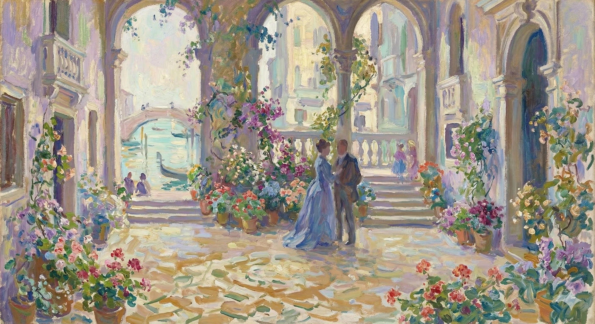

A woman, Milly, is alone in her rented Venetian palace. She reflects on how her man of affairs, Eugenio, found the palace for her and recently escorted her from Paris. She also recalls that her recent travels have been crowded with friends and acquaintances.
Milly appreciates her solitude, which Eugenio arranged by taking her companions away for the morning at her unspoken request. She walks through the entire apartment, deciding she wants to stay there permanently and resolving to ask Eugenio to arrange it.
When she returns to the main saloon, she finds Lord Mark waiting for her. He says he came to Venice on an impulse after hearing where she was from their mutual friends. He expresses no interest in joining the others who are out. Milly offers to show him around the palace, and he accepts.
Based on the text, here is a concise character study:
The difference was thus that the dusk of afternoon—dusk thick from an early hour—had gathered when he knocked at Mrs. Condrip's door. He had gone from the church to his club, wishing not to present himself in Chelsea at luncheon-time and also remembering that he must attempt independently to make a meal. This, in the event, he but imperfectly achieved: he dropped into a chair in the great dim void of the club library, with nobody, up or down, to be seen, and there after a while, closing his eyes, recovered an hour of the sleep he had lost during the night. Before doing this indeed he had written—it was the first thing he did—a short note, which, in the Christmas desolation of the place, he had managed only with difficulty and doubt to commit to a messenger. He wished it carried by hand, and he was obliged, rather blindly, to trust the hand, as the messenger, for some reason, was unable to return with a gage of delivery. When at four o'clock he was face to face with Kate in Mrs. Condrip's small drawing-room he found to his relief that his notification had reached her. She was expectant and to that extent prepared; which simplified a little—if a little, at the present pass, counted. Her conditions were vaguely vivid to him from the moment of his coming in, and vivid partly by their difference, a difference sharp and suggestive, from those in which he had hitherto constantly seen her. He had seen her but in places comparatively great; in her aunt's pompous house, under the high trees of Kensington and the storied ceilings of Venice. He had seen her, in Venice, on a great occasion, as the centre itself of the splendid Piazza: he had seen her there, on a still greater one, in his own poor rooms, which yet had consorted with her, having state and ancientry even in their poorness; but Mrs. Condrip's interior, even by this best view of it and though not flagrantly mean, showed itself as a setting almost grotesquely inapt. Pale, grave and charming, she affected him at once as a distinguished stranger—a stranger to the little Chelsea street—who was making the best of a queer episode and a place of exile. The extraordinary thing was that at the end of three minutes he felt himself less appointedly a stranger in it than she.
The difference was that it was getting dark early in the afternoon when he knocked on Mrs. Condrip's door. He'd gone from church to his club because he didn't want to show up in Chelsea for lunch, and he also remembered he needed to find something to eat. This didn't go well: he slumped into a chair in the big, empty club library, with no one around, and after a while, he closed his eyes and managed to get an hour of sleep he'd missed the night before. Before that, he'd written a quick note—the first thing he did—which he'd struggled to get a messenger to deliver in the empty club. He wanted it hand-delivered, and he had to trust the messenger because, for some reason, the messenger couldn't come back with proof of delivery. When he finally saw Kate at four o'clock in Mrs. Condrip's small living room, he was relieved to find that his message had reached her. She was expecting him, and that helped—even if only a little, considering the situation. Her demeanor was somewhat clear to him from the moment he walked in, and it was different, a clear and noticeable difference, from how he'd usually seen her. He'd only seen her in relatively grand settings: at her aunt's fancy house, under the tall trees of Kensington, and in the ornate ceilings of Venice. He'd seen her in Venice on a special occasion, the center of the beautiful Piazza; he'd also seen her on an even bigger occasion in his own modest rooms, which still suited her, as they had a sense of history even in their simplicity. But Mrs. Condrip's place, even viewed at its best, and though not truly shabby, seemed like an almost comically unsuitable backdrop. Pale, serious, and charming, she struck him as a distinguished outsider—an outsider to that small Chelsea street—making the best of a strange situation and a place of exile. The surprising thing was that after three minutes, he felt less like a stranger there than she did.
A part of the queerness—this was to come to him in glimpses—sprang from the air as of a general large misfit imposed on the narrow room by the scale and mass of its furniture. The objects, the ornaments were, for the sisters, clearly relics and survivals of what would, in the case of Mrs. Condrip at least, have been called better days. The curtains that overdraped the windows, the sofas and tables that stayed circulation, the chimney-ornaments that reached to the ceiling and the florid chandelier that almost dropped to the floor, were so many mementoes of earlier homes and so many links with their unhappy mother. Whatever might have been in itself the quality of these elements Densher could feel the effect proceeding from them, as they lumpishly blocked out the decline of the dim day, to be ugly almost to the point of the sinister. They failed to accommodate or to compromise; they asserted their differences without tact and without taste. It was truly having a sense of Kate's own quality thus promptly to see them in reference to it. But that Densher had this sense was no new thing to him, nor did he in strictness need, for the hour, to be reminded of it. He only knew, by one of the tricks his imagination so constantly played him, that he was, so far as her present tension went, very specially sorry for her—which was not the view that had determined his start in the morning; yet also that he himself would have taken it all, as he might say, less hard. He could have lived in such a place; but it wasn't given to those of his complexion, so to speak, to be exiled anywhere. It was by their comparative grossness that they could somehow make shift. His natural, his inevitable, his ultimate home—left, that is, to itself—wasn't at all unlikely to be as queer and impossible as what was just round them, though doubtless in less ample masses. As he took in moreover how Kate wouldn't have been in the least the creature she was if what was just round them hadn't mismatched her, hadn't made for her a medium involving compunction in the spectator, so, by the same stroke, that became the very fact of her relation with her companions there, such a fact as filled him at once, oddly, both with assurance and with suspense. If he himself, on this brief vision, felt her as alien and as ever so unwittingly ironic, how must they not feel her and how above all must she not feel them?
Part of what was unusual about this situation—something he would gradually realize—came from a general sense of unease, a feeling that the room’s furniture didn’t quite fit. The objects and decorations were, for the sisters, clearly remnants of better times, at least in the case of Mrs. Condrip. The heavy curtains, the sofas and tables that made the room feel cramped, the tall ornaments and the elaborate chandelier that hung low, were all reminders of earlier homes and symbols of their unhappy mother. Regardless of their individual qualities, Densher could feel the effect they had, blocking out the fading light and becoming almost disturbingly ugly. They didn't blend in or try to be agreeable; they emphasized their differences without any grace or good taste. It was a sign of Densher's understanding of Kate to immediately see how these things related to her. But this understanding wasn't new to him, nor did he need to be reminded of it at that moment. He only knew, through one of the tricks his imagination played on him, that he felt especially sorry for her, given her current stress—which wasn't how he'd felt that morning. Yet, he also realized that he, personally, wouldn't have been so bothered by it all. He could have lived in such a place, but people like him, so to speak, weren’t destined to be out of place anywhere. Their lack of refinement allowed them to adapt. His natural home, if left to its own devices, would likely be just as strange and impossible as the environment around him, though probably on a smaller scale. And, as he further considered how Kate wouldn’t be the person she was if this environment hadn't clashed with her, hadn't created a situation that made the observer feel uneasy, it became clear that this was the very essence of her relationship with the people around her, filling him with both a strange sense of certainty and anticipation. If he, in this brief moment, saw her as alien and unknowingly sarcastic, how must they perceive her, and how must she, above all, perceive them?
Densher could ask himself that even after she had presently lighted the tall candles on the mantel-shelf. This was all their illumination but the fire, and she had proceeded to it with a quiet dryness that yet left play, visibly, to her implication between them, in their trouble and failing anything better, of the presumably genial Christmas hearth. So far as the genial went this had in strictness, given their conditions, to be all their geniality. He had told her in his note nothing but that he must promptly see her and that he hoped she might be able to make it possible; but he understood from the first look at her that his promptitude was already having for her its principal reference. "I was prevented this morning, in the few minutes," he explained, "asking Mrs. Lowder if she had let you know, though I rather gathered she had; and it's what I've been in fact since then assuming. It was because I was so struck at the moment with your having, as she did tell me, so suddenly come here."
Densher could wonder about that, even after she lit the tall candles on the mantel. Those were their only lights besides the fire, and she'd gone about it with a calm seriousness that still allowed for a subtle connection between them, a sense of shared trouble and, lacking anything better, a kind of Christmas spirit. Given their situation, that spirit was pretty much all they had. He'd only written in his note that he needed to see her right away and hoped she could make it happen. But the moment he saw her, he knew his urgency was the main point for her. "I couldn't ask Mrs. Lowder this morning, in those few minutes," he explained, "if she'd told you, though I figured she had. And I've been assuming it since then. It's because I was so surprised you came here so suddenly, as she told me."
"Yes, it was sudden enough." Very neat and fine in the contracted firelight, with her hands in her lap, Kate considered what he had said. He had spoken immediately of what had happened at Sir Luke Strett's door. "She has let me know nothing. But that doesn't matter—if it's what you mean."
"Yes, it was definitely unexpected." Sitting very primly and elegantly in the flickering firelight, with her hands folded in her lap, Kate thought about what he'd said. He'd immediately brought up what happened at Sir Luke Strett's house. "She hasn't told me anything. But that doesn't matter—if that's what you're getting at."
"It's part of what I mean," Densher said; but what he went on with, after a pause during which she waited, was apparently not the rest of that. "She had had her telegram from Mrs. Stringham; late last night. But to me the poor lady hasn't wired. The event," he added, "will have taken place yesterday, and Sir Luke, starting immediately, one can see, and travelling straight, will get back to-morrow morning. So that Mrs. Stringham, I judge, is left to face in some solitude the situation bequeathed to her. But of course," he wound up, "Sir Luke couldn't stay."
"That's part of what I was trying to say," Densher said, but what he continued with, after she paused and waited, wasn't what he'd been about to say. "She got her telegram from Mrs. Stringham late last night. But the poor lady hasn't wired me. The event," he added, "must have happened yesterday, and Sir Luke, leaving right away, as you'd expect, and traveling directly here, will be back tomorrow morning. So I figure Mrs. Stringham is alone now, dealing with whatever's happened. But of course," he finished, "Sir Luke couldn't stay."
Her look at him might have had in it a vague betrayal of the sense that he was gaining time. "Was your telegram from Sir Luke?"
Her glance at him might have hinted that she thought he was stalling. "Did your telegram come from Sir Luke?"
"No—I've had no telegram."
No, I haven't gotten a telegram.
She wondered. "But not a letter—?"
She wondered, "But it's not a letter, is it?"
"Not from Mrs. Stringham—no." He failed again however to develop this—for which her forbearance from another question gave him occasion. From whom then had he heard? He might at last, confronted with her, really have been gaining time; and as if to show that she respected this impulse she made her enquiry different. "Should you like to go out to her—to Mrs. Stringham?"
"Not from Mrs. Stringham—no." He still couldn't elaborate on that—which was fortunate because she didn't ask him any more questions.
"So, who did you hear it from?" He seemed to be stalling now that he was face-to-face with her; and as if to show she understood, she changed her question. "Would you like to go see her—Mrs. Stringham?"
About that at least he was clear. "Not at all. She's alone, but she's very capable and very courageous. Besides—!" He had been going on, but he dropped.
He was certain about one thing. "Absolutely not. She's alone, but she's resourceful and brave. And furthermore—!" He started to say more, but he stopped abruptly.
"Besides," she said, "there's Eugenio? Yes, of course one remembers Eugenio."
"Also," she said, "what about Eugenio? Of course, I remember Eugenio."
She had uttered the words as definitely to show them for not untender; and he showed equally every reason to assent. "One remembers him indeed, and with every ground for it. He'll be of the highest value to her—he's capable of anything. What I was going to say," he went on, "is that some of their people from America must quickly arrive."
She spoke the words with such certainty to prove they weren't unkind; and he agreed completely. "You remember him, yes, and with good reason. He'll be incredibly important to her—he can do anything. What I was about to say," he continued, "is that some of their family from America need to arrive soon."
On this, as happened, Kate was able at once to satisfy him. "Mr. Someone-or-other, the person principally in charge of Milly's affairs—her first trustee, I suppose—had just got there at Mrs. Stringham's last writing."
As it turned out, Kate was able to reassure him immediately. "Mr. So-and-So, the person who mainly handled Milly's financial matters—her primary trustee, I guess—had just arrived at Mrs. Stringham's when I last wrote."
"Ah that then was after your aunt last spoke to me—I mean the last time before this morning. I'm relieved to hear it. So," he said, "they'll do."
Oh, so that was after your aunt last talked to me – I mean, the last time before this morning. I'm glad to hear that. So, he said, "they'll work."
"Oh they'll do." And it came from each still as if it wasn't what each was most thinking of. Kate presently got however a step nearer to that. "But if you had been wired to by nobody what then this morning had taken you to Sir Luke?"
"Oh, they'll be okay." And that came from everyone, as if it wasn't the thing they were most focused on. Kate then got a little closer to the point. "But if no one had contacted you, what would have taken you to Sir Luke this morning?"
"Oh something else—which I'll presently tell you. It's what made me instantly need to see you; it's what I've come to speak to you of. But in a minute. I feel too many things," he went on, "at seeing you in this place." He got up as he spoke; she herself remained perfectly still. His movement had been to the fire, and, leaning a little, with his back to it, to look down on her from where he stood, he confined himself to his point. "Is it anything very bad that has brought you?"
Oh, there's something else – I'll tell you in a moment. It's why I needed to see you right away, what I'm here to talk about. But give me a second. I'm feeling overwhelmed," he continued, "seeing you here." He stood up as he spoke, but she stayed perfectly still. He moved toward the fireplace, leaned against it with his back to her, and looked down at her. Then he got to the point: "Is anything really wrong that made you come?"
He had now in any case said enough to justify her wish for more; so that, passing this matter by, she pressed her own challenge. "Do you mean, if I may ask, that she, dying—?" Her face, wondering, pressed it more than her words.
He had, at this point, said enough to make her want to hear more. Therefore, she changed the subject and put forward her own question. "If I can ask," she said, "do you mean that she, as she was dying—?" Her face, full of curiosity, asked the question even more than her words did.
"Certainly you may ask," he after a moment said. "What has come to me is what, as I say, I came expressly to tell you. I don't mind letting you know," he went on, "that my decision to do this took for me last night and this morning a great deal of thinking of. But here I am." And he indulged in a smile that couldn't, he was well aware, but strike her as mechanical.
"Go ahead and ask," he said after a pause. "What I'm here to tell you is exactly what I came for. I don't have a problem telling you," he continued, "that making this decision took a lot of thought, last night and this morning. But here I am." And he offered a smile that, he knew, would probably seem forced.
She went straighter with him, she seemed to show, than he really went with her. "You didn't want to come?"
She seemed to be more honest with him than he was with her. "You didn't want to come?"
"It would have been simple, my dear"—and he continued to smile—"if it had been, one way or the other, only a question of 'wanting.' It took, I admit it, the idea of what I had best do, all sorts of difficult and portentous forms. It came up for me really—well, not at all for my happiness."
"It would have been easy, my dear," he said, still smiling, "if it were just a matter of 'wanting.' I have to admit, the idea of what I should do took on all sorts of complicated and significant shapes. It really came down to—well, not my happiness at all."
This word apparently puzzled her—she studied him in the light of it. "You look upset—you've certainly been tormented. You're not well."
That word seemed to confuse her – she examined him, considering the word. "You look troubled – you've definitely been suffering. You're not doing well."
"Oh—well enough!"
Oh—that's good enough!
But she continued without heeding. "You hate what you're doing."
But she kept going, not listening. "You hate your job."
"My dear girl, you simplify"—and he was now serious enough. "It isn't so simple even as that."
"Look, sweetheart, you're making this too easy," and he was being serious now. "It's not even that straightforward."
She had the air of thinking what it then might be. "I of course can't, with no clue, know what it is." She remained none the less patient and still. "If at such a moment she could write you one's inevitably quite at sea. One doesn't, with the best will in the world, understand." And then as Densher had a pause which might have stood for all the involved explanation that, to his discouragement, loomed before him: "You haven't decided what to do."
She seemed to be trying to figure out what was going on. "I obviously have no idea what it is." She remained calm and still. "If she could write to you at a time like this, you'd be completely lost. You just wouldn't understand, no matter how hard you tried." Then, as Densher paused, giving him a chance to answer, which would involve a lot of explanation that he didn't want to have to give: "You haven't made up your mind."
She had said it very gently, almost sweetly, and he didn't instantly say otherwise. But he said so after a look at her. "Oh yes—I have. Only with this sight of you here and what I seem to see in it for you—!" And his eyes, as at suggestions that pressed, turned from one part of the room to another.
She'd said it very softly, almost kindly, and he didn't immediately disagree. But he did after looking at her. "Oh yes—I have. Only with seeing you here and what I seem to imagine for you—!" And his eyes, as if responding to unspoken ideas, shifted from one part of the room to another.
"Horrible place, isn't it?" said Kate.
"This place is awful, isn't it?" said Kate.
It brought him straight back to his enquiry. "Is it for anything awful you've had to come?"
It brought him right back to his question. "Did something terrible happen that made you come here?"
"Oh that will take as long to tell you as anything you may have. Don't mind," she continued, "the 'sight of me here,' nor whatever—which is more than I yet know myself—may be 'in it' for me. And kindly consider too that, after all, if you're in trouble I can a little wish to help you. Perhaps I can absolutely even do it."
That would take just as long to explain as anything you might have to say. Don't worry, she went on, about seeing me here, or whatever—which is more than I understand right now—might be involved for me. Also, please remember that, even if you're in trouble, I'd like to help you a little. Maybe I can actually do it.
"My dear child, it's just because of the sense of your wish—! I suppose I'm in trouble—I suppose that's it." He said this with so odd a suddenness of simplicity that she could only stare for it—which he as promptly saw. So he turned off as he could his vagueness. "And yet I oughtn't to be." Which sounded indeed vaguer still.
"Sweetheart, it's just because you really want it—! I guess I'm in a bind—I suppose that's the problem." He said this so unexpectedly and plainly that she could only stare, which he immediately noticed. So he tried to hide his confusion. "And yet I shouldn't be." Which actually sounded even more confusing.
She waited a moment. "Is it, as you say for my own business, anything very awful?"
She paused. "Is whatever it is you need to tell me... really bad?"
"Well," he slowly replied, "you'll tell me if you find it so. I mean if you find my idea—"
"Well," he said slowly, "you can tell me if you think so. I mean, if you think my idea—"
He was so slow that she took him up. "Awful?" A sound of impatience—the form of a laugh—at last escaped her. "I can't find it anything at all till I know what you're talking about."
He was being so slow that she finally lost her patience with him. "Terrible?"
A sound of impatience, almost a laugh, finally escaped her. "I can't understand any of this until I know what you're even talking about."
It brought him then more to the point, though it did so at first but by making him, on the hearthrug before her, with his hands in his pockets, turn awhile to and fro. There rose in him even with this movement a recall of another time—the hour in Venice, the hour of gloom and storm, when Susan Shepherd had sat in his quarters there very much as Kate was sitting now, and he had wondered, in pain even as now, what he might say and mightn't. Yet the present occasion after all was somehow the easier. He tried at any rate to attach that feeling to it while he stopped before his companion. "The communication I speak of can't possibly belong—so far as its date is concerned—to these last days. The postmark, which is legible, does; but it isn't thinkable, for anything else, that she wrote—!" He dropped, looking at her as if she'd understand.
It finally got him focused, even though it just made him pace back and forth in front of her, his hands in his pockets. As he did that, he remembered another time – the gloomy, stormy hours in Venice. Susan Shepherd had been in his quarters then, sitting much like Kate was now, and he had been agonizing, just like now, about what to say and what not to say. But this situation felt somehow easier, after all. At least, he tried to think that as he stopped in front of her. "The letter I mentioned definitely couldn't have been written recently, based on its date. The postmark, which I can read, is recent, but everything else points to it not being written then—!" He trailed off, looking at her as if he expected her to understand.
It was easy to understand. "On her deathbed?" But Kate took an instant's thought. "Aren't we agreed that there was never any one in the world like her?"
It was easy to figure out. "On her deathbed?"
But Kate paused for a moment. "Don't we all agree that there was nobody else like her?"
"Yes." And looking over her head he spoke clearly enough. "There was never any one in the world like her."
"Yes." He looked over her head and said, clearly, "There was no one else in the world like her."
Kate, from her chair, always without a movement, raised her eyes to the unconscious reach of his own. Then when the latter again dropped to her she added a question. "And won't it further depend a little on what the communication is?"
Kate, without moving from her chair, looked up and met his gaze, which hadn't been focused on her. Then, when he looked back at her, she asked, "And doesn't it also depend on what we're talking about?"
"A little perhaps—but not much. It's a communication," said Densher.
"A little, maybe—but not a lot. It's a message," said Densher.
"Do you mean a letter?"
You mean a letter?
"Yes, a letter. Addressed to me in her hand—in hers unmistakeably."
Yes, a letter. It was written to me in her own handwriting – I recognized it immediately.
Kate thought. "Do you know her hand very well?"
Kate wondered, "Are you familiar with her handwriting?"
"Oh perfectly."
Okay.
It was as if his tone for this prompted—with a slight strangeness—her next demand. "Have you had many letters from her?"
His tone seemed to directly cause—in a slightly odd way—her next question. "Have you gotten many letters from her?"
"No. Only three notes." He spoke looking straight at her. "And very, very short ones."
"No. Just three notes," he said, looking directly at her. "And they're really, really short."
"Ah," said Kate, "the number doesn't matter. Three lines would be enough if you're sure you remember."
"Oh," said Kate, "it doesn't matter how many.
Three lines should be good enough, as long as you definitely remember."
"I'm sure I remember. Besides," Densher continued, "I've seen her hand in other ways. I seem to recall how you once, before she went to Venice, showed me one of her notes precisely for that. And then she once copied me something."
"I'm pretty sure I remember. Also," Densher continued, "I've seen how she operates in other situations. I think I recall you showing me one of her notes specifically for that purpose, before she went to Venice. And then she copied something for me once."
"Oh," said Kate almost with a smile, "I don't ask you for the detail of your reasons. One good one's enough." To which however she added as if precisely not to speak with impatience or with anything like irony: "And the writing has its usual look?"
"Oh," Kate said, almost smiling, "I don't need all the details of your reasons. One good one is enough." But then, almost as if to avoid sounding impatient or sarcastic, she added, "And the writing looks the same as usual?"
Densher answered as if even to better that description of it. "It's beautiful."
Densher responded, as if he wanted to improve upon that explanation. "It's beautiful."
"Yes—it was beautiful. Well," Kate, to defer to him still, further remarked, "it's not news to us now that she was stupendous. Anything's possible."
Yes, it was beautiful. Well," Kate said, to avoid disagreeing with him, "It's not surprising that she was amazing. Anything is possible."
"Yes, anything's possible"—he appeared oddly to catch at it. "That's what I say to myself. It's what I've been believing you," he a trifle vaguely explained, "still more certain to feel."
"Yeah, anything's possible"—he seemed strangely
enthusiastic about that idea. "That's what I tell myself.
That's what I've been trusting you with," he explained a little vaguely,
"I'm even more sure of it now."
She waited for him to say more, but he only, with his hands in his pockets, turned again away, going this time to the single window of the room, where in the absence of lamplight the blind hadn't been drawn. He looked out into the lamplit fog, lost himself in the small sordid London street—for sordid, with his other association, he felt it—as he had lost himself, with Mrs. Stringham's eyes on him, in the vista of the Grand Canal. It was present then to his recording consciousness that when he had last been driven to such an attitude the very depth of his resistance to the opportunity to give Kate away was what had so driven him. His waiting companion had on that occasion waited for him to say he would; and what he had meantime glowered forth at was the inanity of such a hope. Kate's attention, on her side, during these minutes, rested on the back and shoulders he thus familiarly presented—rested as with a view of their expression, a reference to things unimparted, links still missing and that she must ever miss, try to make them out as she would. The result of her tension was that she again took him up. "You received—what you spoke of—last night?"
She waited for him to say more, but he just turned away again, hands in his pockets, and went to the room's only window. Since there was no lamplight, the blind hadn't been pulled down. He stared out into the foggy, lamplit street, getting lost in the drab London scene—he felt it was drab because of its connection to something else. It was the same way he'd lost himself, with Mrs. Stringham watching him, in the view of the Grand Canal. He realized then that the last time he'd acted like this, he'd been driven by his strong refusal to give Kate away. On that occasion, the person waiting for him had expected him to agree; what he'd actually been glaring at was the pointlessness of that hope. Meanwhile, Kate was focused on his back and shoulders, as if trying to understand their expression. She was trying to figure out the unsaid things, the missing pieces she'd never grasp, no matter how hard she tried. As a result of this tension, she spoke to him again. "Did you get—what you mentioned—last night?"
It made him turn round. "Coming in from Fleet Street—earlier by an hour than usual—I found it with some other letters on my table. But my eyes went straight to it, in an extraordinary way, from the door. I recognised it, knew what it was, without touching it."
It made him turn around. "When I came in from Fleet Street – an hour earlier than usual – I found it on my desk with some other letters. But my eyes went straight to it the moment I walked in the door. I recognized it and knew what it was, without even touching it."
"One can understand." She listened with respect. His tone however was so singular that she presently added: "You speak as if all this while you hadn't touched it."
"I understand," she said, listening respectfully. But his way of speaking was so unusual that she quickly added, "You talk as if you haven't been involved at all."
"Oh yes, I've touched it. I feel as if, ever since, I'd been touching nothing else. I quite firmly," he pursued as if to be plainer, "took hold of it."
Yeah, I've done it. I feel like I've been focused on it ever since. I definitely," he continued, trying to be clearer, "grabbed it."
"Then where is it?"
So, where is it?
"Oh I have it here."
Here it is.
"And you've brought it to show me?"
So, you wanted me to see this?
"I've brought it to show you."
I wanted to show you this.
So he said with a distinctness that had, among his other oddities, almost a sound of cheer, yet making no movement that matched his words. She could accordingly but offer again her expectant face, while his own, to her impatience, seemed perversely to fill with another thought. "But now that you've done so you feel you don't want to."
He said it clearly, even cheerfully in a strange way, but didn't actually do anything. So she just looked at him expectantly, but he seemed to be getting lost in thought, which annoyed her. "But now that you've done that, you don't want to anymore."
"I want to immensely," he said. "Only you tell me nothing."
"I want to badly," he said. "Just don't tell me anything."
She smiled at him, with this, finally, as if he were an unreasonable child. "It seems to me I tell you quite as much as you tell me. You haven't yet even told me how it is that such explanations as you require don't come from your document itself." Then as he answered nothing she had a flash. "You mean you haven't read it?"
She smiled at him, and it was like he was a frustrating kid. "I feel like I share just as much information with you as you share with me. You still haven't explained why the answers you need aren't in the document itself." When he didn't respond, it suddenly clicked for her. "You haven't even read it, have you?"
"I haven't read it."
I haven't read it.
She stared. "Then how am I to help you with it?"
She looked at him blankly. "So, how can I help you with that?"
Again leaving her while she never budged he paced five strides, and again he was before her. "By telling me this. It's something, you know, that you wouldn't tell me the other day."
He walked away from her, and even though she didn't move, he took five steps and then turned back to her. "You're telling me this now. It's different, you know, from what you wouldn't tell me before."
She was vague. "The other day?"
She was being unclear. "The other day?"
"The first time after my return—the Sunday I came to you. What's he doing," Densher went on, "at that hour of the morning with her? What does his having been with her there mean?"
The first time, the Sunday I came to see you. "What's he doing," Densher continued, "there with her so early in the morning? What does it mean that he was there with her?"
"Of whom are you talking?"
Who are you talking about?
"Of that man—Lord Mark of course. What does it represent?"
"That guy – Lord Mark, obviously. What's it supposed to mean?"
"Oh with Aunt Maud?"
"Oh, with Aunt Maud?"
"Yes, my dear—and with you. It comes more or less to the same thing; and it's what you didn't tell me the other day when I put you the question."
Yes, darling – and with you too. It's pretty much the same. And it's what you didn't tell me the other day when I asked you.
Kate tried to remember the other day. "You asked me nothing about any hour."
Kate tried to remember the other day. "You didn't ask me anything about any specific time."
"I asked you when it was you last saw him—previous, I mean, to his second descent at Venice. You wouldn't say, and as we were talking of a matter comparatively more important I let it pass. But the fact remains, you know, my dear, that you haven't told me."
I asked you when you last saw him – before, I mean, before he came to Venice a second time. You wouldn't tell me, and since we were discussing something more important, I didn't press the issue. But the truth is, you know, you still haven't told me.
Two things in this speech appeared to have reached Kate more distinctly than the others. "I 'wouldn't say'?—and you 'let it pass'?" She looked just coldly blank. "You really speak as if I were keeping something back."
Two things in that conversation really stood out to Kate. "You wouldn't say anything?" and "You just let it go?" She looked completely emotionless. "You're acting like I'm hiding something."
"Well, you see," Densher persisted, "you're not even telling me now. All I want to know," he nevertheless explained, "is whether there was a connexion between that proceeding on his part, which was practically—oh beyond all doubt!—the shock precipitating for her what has now happened, and anything that had occurred with him previously for yourself. How in the world did he know we're engaged?"
Okay, here's the translation:
"Look," Densher continued, "you're still not telling me. All I need to know," he clarified, "is if there's a link between what he did, which pretty much—yes, absolutely!—caused the breakdown that led to what happened to her, and anything you had with him before. How on earth did he find out we were engaged?"